Freddy entra por la puerta derecha de la oficina, hay que predecir su ataque mirando en las camaras ya que el no se asoma por la puerta
Se evita cerrando la puerta cuando este en la camara 4B, que es la camara de la esquina derecha de la oficina
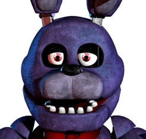
Bonnie
Five Nights At Freddy's
Bonnie entra por la puerta izquierda, el se asomara en la puerta y tendras que cerrarle
Con la luz descubriras su posición y cerrando la puerta lo espantaras
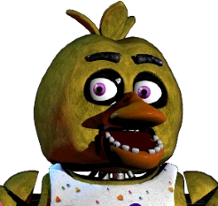
Chica
Five Nights At Freddy's
Chica entra por la puerta derecha, ella se asomara en la puerta y tendras que cerrarle
Con la luz descubriras su posición y cerrando la puerta lo espantaras
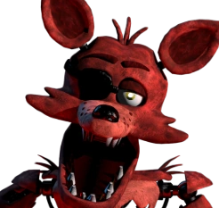
Foxy
Five Nights At Freddy's
Foxy estará en la Pirate Cove en la camara 1C y se irá moviendo poco a poco, una vez se acabe de mover ira corriendo por el pasillo a tu oficina
Cerrando la puerta lo espantas, foxy tiene una mecanica que cada vez que toque tu puerta te ira drenando batería empezando por 0%, continuando con 5%, 10%...
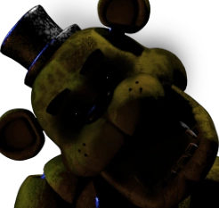
Golden Freddy
Five Nights At Freddy's
Hay una probabilidad random de que en la camara 2B se sustituya por el, una vez que eso pase el aparecera en tu oficina
Simplemente levanta el monitor otra vez o cambia de camara cuando lo veas en la 2B
Toy Freddy
Five Nights At Freddy's 2
Entra por el pasillo central. Una vez entre a la oficina la pantalla parpadeara y se pondra delante tuya
Ponerte la mascara de freddy hará que vuelva a su posición inicial
Toy Bonnie
Five Nights At Freddy's 2
Entra por el conducto derecho, asomandose antes de atacar. Una vez entre a la oficina la pantalla parpadeara y pasara por delante tuya
Ponerte la mascara de freddy hará que vuelva a su posición inicial
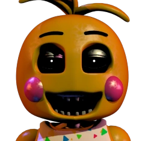
Toy Chica
Five Nights At Freddy's 2
Entra por el conducto izquierdo, asomandose antes de atacar. Una vez entre a la oficina la pantalla parpadeara y pasara por delante tuya
Ponerte la mascara de freddy hará que vuelva a su posición inicial
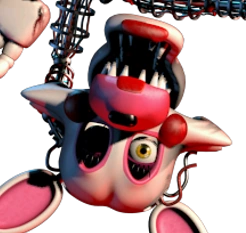
Mangle
Five Nights At Freddy's 2
Entra por la ventilación derecha, asomandose al atacar. Si entra se posara encoma de la oficina haciendo tu muerte inevitable
Ponerte la mascara de freddy antes de que entre en la oficina hará que vuelva a su posición inicial
BalloonBoy
Five Nights At Freddy's 2
Entra por el conducto izquierdo, asomandose antes de atacar. Su ataque es incapaz de matarte pero deshabilitara tu linterna temporalmente haciendote vulnerable a foxy por ejemplo, que lo espantas con la linterna
Ponerte la mascara de freddy antes de que entre en la oficina hará que vuelva a su posición inicial
The Puppet
Five Nights At Freddy's 2
Se mantiene en la camara 11 estatica, saldra si su caja de musica se queda sin cuerda, haciendo que mueras inevitablemente
Recargando su caja de musica hara que ella no spawnee
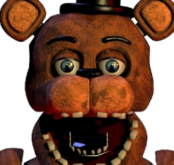
Withered Freddy
Five Nights At Freddy's 2
Entra por el pasillo central. Una vez entre a la oficina la pantalla parpadeara y se pondra delante tuya
Ponerte la mascara de freddy hará que vuelva a su posición inicial
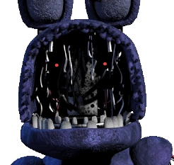
Withered Bonnie
Five Nights At Freddy's 2
Entra por el conducto izquierdo. Una vez entre a la oficina la pantalla parpadeara y se pondra delante tuya
Ponerte la mascara de freddy hará que vuelva a su posición inicial
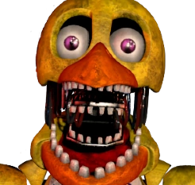
Withered Chica
Five Nights At Freddy's 2
Entra por el conducto derecho. Una vez entre a la oficina la pantalla parpadeara y se pondra delante tuya
Ponerte la mascara de freddy hará que vuelva a su posición inicial
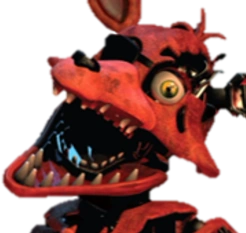
Withered Foxy
Five Nights At Freddy's 2
Se pondra en el pasillo central y se queda ahí hasta que te mate o lo evites
Alumbrarle con la linterna lo devuelve a su posición inicial, es por eso que baloon boy es tan irritante en este juego
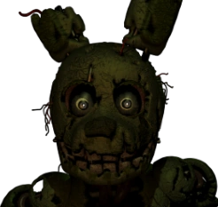
Springtrap
Five Nights At Freddy's 3
Springtrap es el unico Animatronico que te puede matar en fnaf 3, el se ira acercando a tu oficina por los pasillos y ventlaciones hasta llegar a tí
Poner sonidos de risa de niños lo distraera e ira a buscarlos, haciendo que retroceda en la mayoria de los casos. Si viene por la ventilación tendras que cerrar el conducto con las camaras
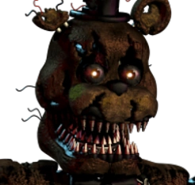
Nightmare Freddy
Five Nights At Freddy's 4
Irá poniendo mini freddys en la cama, una vez que haya 3 de ellos saldra nightmare freddy y te matará
Alumbrar a los mini freddys para que se vayan antes de que se acumulen 3
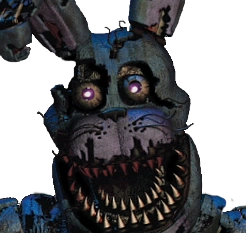
Nightmare Bonnie
Five Nights At Freddy's 4
Aparece en el pasillo izquierdo, asomandose primero y acercandose a la puerta despues
Cuando se acerca se escucha su respiración, en ese momento deves cerrar la puerta hasta que se vaya
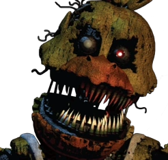
Nightmare Chica
Five Nights At Freddy's 4
Aparece en el pasillo derecho, asomandose primero y acercandose a la puerta despues
Cuando se acerca se escucha su respiración, en ese momento deves cerrar la puerta hasta que se vaya
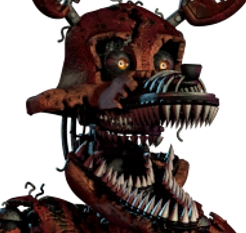
Nightmare Foxy
Five Nights At Freddy's 4
Puede aparecerpor cualquier pasillo, si se te cuela dentro del cuarto deveras ir al armario para tratar con el. Tambien te mata si te quedas demasiado tiempo mirando a la cama
Cerrando las puertas. En caso de que se haya metido tendras que ir al armario y cerrarle hasta que se transforme en un peluche y tendras que ir revisando de vez en cuando ya que puede volver a transformarse
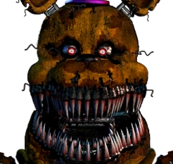
Nightmare Fredbear
Five Nights At Freddy's 4
Por todos lados, puede venir por el armario, la cama, el pasillo izquierdo y el derecho
Si está en las puertas o el armario, cerrar hasta que se vaya. Si está en la cama hay que alumbrarle hasta que se vaya
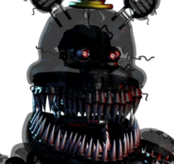
The Nightmare
Five Nights At Freddy's 4
Como Nightmare Fredbear pero mucho mas agresivo
Lo mismo que Nightmare Fredbear
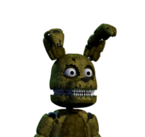
Plushtrap
Five Nights At Freddy's 4
Plushtrap es un minijuego. El se sentará en una silla y se acercara poco a poco a tí hasta que te mate o lo pilles
Alumbrarle con la linterna lo hace parar. Si lo haces parar en la X habras ganado y empezaras la noche a las 2AM. Que te mate no tiene consecuencias
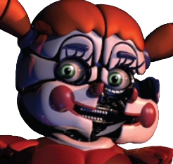
Circus Baby
Sister Location
En sister locatilon baby no te mata en si, en la UCN te matará si no compras su peluche a tiempo
Comprar su peluche por las monedas que te pida dependiendo de su dificultad
Ballora
Sister Location
Ira dando vueltas por su habitación dando vueltas y te matará si te encuentras con ella
Tienes que escuchar su musica y avanzar cuando este lejos para avanzar o cuando este cerca para que no te alcance
Funtime Foxy
Sister Location
Se activa por luz y se activara si le alumbras demasiado o lo tocas
Cuando lo veas no usar tu linterna y si esta muy cerca quedarte quieto para que no te coja
Funtime Freddy
Sister Location
Se va acercando poco a poco a ti en parts and service hasta que te alcanza
Reproducir la voz de bonbon (El animatronico en su mano derecha) para engañarlo y hacer que retroceda
BonBon
Sister Location
Es la forma de matarte que tiene Funtime Freddy en la custom night del sister location
Cerrando la puerta hará que Funtime Freddy vuelva a su posición inicial
Ennard
Sister Location
Este te mata si cometes cualquier error durante el juego, en la custom night actua como todos los personajes al mismo tiempo
Hacer todo como se te indica, en la custom night cerrando puertas y la ventlación para que no entre a la oficina
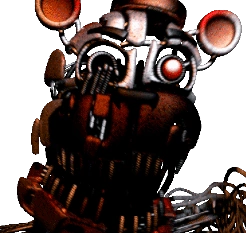
Molten Freddy
Pizzeria simulator
Molten freddy hace ruido por las ventilacionesy detecta si hay mucho ruido en la oficina
Escucharlo atentamente, apagar el ventilador y alumbrar a la dirección en la cual lo escuchas
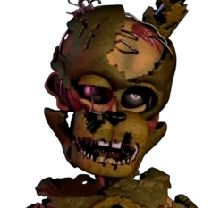
Scraptrap
Pizzeria simulator
Scraptrap o William Afton hace ruido por las ventilacionesy detecta si hay mucho ruido en la oficina
Escucharlo atentamente, apagar el ventilador y alumbrar a la dirección en la cual lo escuchas
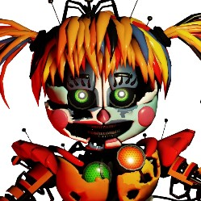
Scrap Baby
Pizzeria simulator
Scrap baby hace ruido por las ventilacionesy detecta si hay mucho ruido en la oficina
Escuchar atentamente sonidos de clicks, apagar el ventilador y alumbrar a la dirección en la cual lo escuchas
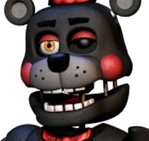
Lefty
Pizzeria simulator
Lefty hace ruido por las ventilacionesy detecta si hay mucho ruido en la oficina
Escucharlo atentamente, apagar el ventilador y alumbrar a la dirección en la cual lo escuchas
Rockstar Freddy
Pizzeria simulator/UCN
Se activara de forma random en la oficina, dependiendo de cuanto nivel le hayas puesto se activara mas frecuentemente
Depositando 5 monedas en el hará que se desactive hasta proximo aviso
Rockstar Bonnie
Pizzeria simulator/UCN
Aparecera dentro de tu oficina, cuando eso pasa tienes cierto tiempo para buscar su guitarra
Su guitarra aparecera de forma aleatoria en una camara, deves darle click para que se vaya de tu oficina
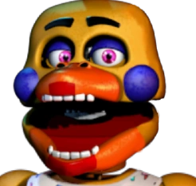
Rockstar Chica
Pizzeria simulator/UCN
Aparece por cualquier puerta, ten en cuenta que cerrando las puertas no la puedes hechar
Moviendo el cartel de suelo mojado en tu oficina a la puerta en la que esta la asustara y se irá
Rockstar Foxy
Pizzeria simulator/UCN
De forma aleatora saldrá su loro por la oficina. Si lo clickeas depende de cuanto nivel le has puesto tendra mas probabilidad de matarte que de darte un boost como hace normalmente
Si ignoras su loro no devería pasar nada
Glamrock Freddy
Security Breach
Glamrock freddy no te ataca o mata durante el juego ya que ayuda al jugador
Tiene batería limitada y si no lo cargas te hechara de su cuerpo
Glamrock Chica
Security Breach
Va rondando por el mapa de forma aleatoria y persigue al jugador si lo ve
Correr o meterse dentro de Glamrock Freddy
RoxanneWolf
Security Breach
Va rondando por el mapa de forma aleatoria y persigue al jugador si lo ve
Correr o meterse dentro de Glamrock Freddy
MontgomeryGator
Security Breach
Va rondando por el mapa de forma aleatoria y persigue al jugador si lo ve
Correr o meterse dentro de Glamrock Freddy
DaycareAttendantSun
Security Breach
Sun no te mata en si, solo te asusta
El desorden lo distrae y hace que vaya a recogerlo
DaycareAttendantMoon
Security Breach
Va rondando por el daycare cuando las luces estan apagadas y persigue al jugador si lo ve
Correr, esconderse y encender las luces para desactivarlo
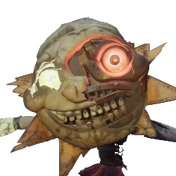
DaycareAttendantEclipse
Security Breach
Se queda en una parte del daycare y no puede moverse a no ser que tu lo toques
Encender las luces y reiniciarlo lo devuelve a sun
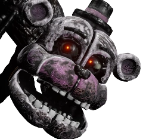
Blob
Security Breach
Si lo tocas te mata
Como es un personaje estacionario simplemente evita acercarte a el
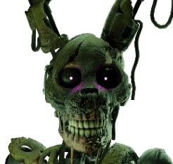
Burntrap
Security Breach
Intenta poseer a freddy para que te mate, y tira otros animatronicos para matarte también